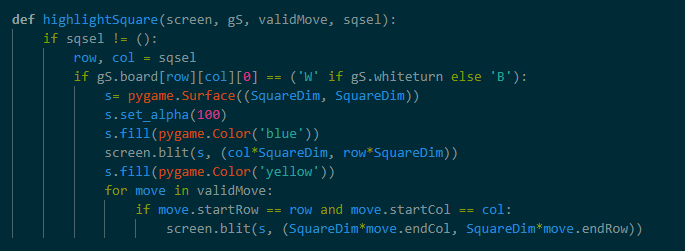

AI Chess Bots
Introduction
I was always interested in AI and learned a lot about neural networks and min-max algorithms. However, it was hard to implement these ideas without a proper game so I decided to create a python chess program. I specifically created a chess game over simpler games like checkers because I could experiment with more complex types of AI programs using my knowledge and skills in chess.
Creating the Game
Board
I began by creating the basic chess pattern of grey and white squares.
I then created a 2d list which allowed me to easily switch out pieces that were very useful for creating alternate board setups to test end game algorithms later.

Then based on that I mapped each string to an image which allowed all the pieces to show up in the order of the list.

Piece Movement
These two functions control the movement of all the pieces allowing them to move to any square. It achieves this by editing the 2D list with the new location of the mouse.
These next couple of functions determine the moves for each kind of piece. It looks like every move matches with the set direction. The king has the same code as the bishop, but with added adjacent directions and a limit of one square per movement.
The rook, knight, queen, and pawn then follow the same code, but with changed directions of movement.

ValidMove then further restricts moves by not allowing pieces to move when the king is in check unless it can block the check. If no moves exist then it is checkmate and the code stops.
Piece Interaction
Because I already set the possible moves for each piece, highlighting the piece was easy. All I had to do was set the squares of the moves as yellow when the piece was selected.

The code is set that If there is an empty and safe space between the king and the rook the code introduces a new king position that can be moved to. The castling is based on isCasteMove so I can set it to false when the king or rook is moved beforehand.
This function translates the row and column moved into chess notation. It is not currently useful, but I want to try uploading several chess move sheets made by players to have them learn more abstract moves by reviewing the data.

Undo is very similar to the move function. All I had to do was reverse each of the movements using the old movement data that I saved.
I ran the main move function into the animation function. The function works by slightly increasing the position of the pieces in every frame.
Machine Learning
This causes the bot to choose any available move randomly. It is used when it cannot find a move.
The function is the most important factor in deciding the bot's move. It uses a basic Min-Max algorithm to detect the best move which maximizes the bot's score while reducing the opponent's min score.
This function fins the total score on each side of the board, This is used to predict the best scoring move by detecting the score before and after.
As you can see in the video there is still a lot of improvement to be made. The random move works decently in the end game, but in the beginning, you can see that the king moved for war which is not a good move. It did not consider checking and it always took a better piece when offered which is not always the best move.
I am still currently working on this project. I still want to introduce alpha-beta pruning so the code can quickly calculate several moves ahead. I also am currently adding more specific weights to each movement emphasizing openness, future moves, and common strategic positions.
Mechanical Design AI Mechanical Engineering Electronics